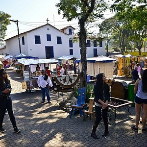
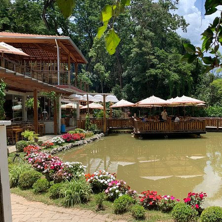
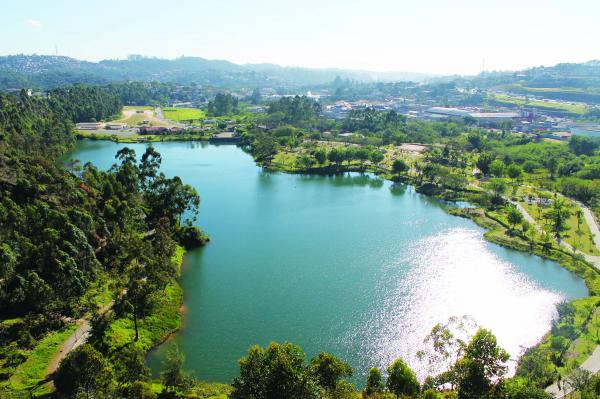

Passer em Embu das Artes

Embu das Artes para muitos destino de compras, por causa da sua feirinha de artesanato em especial aos finais de semana e feriados com mais opções, diversas lojas e ateliês, conta atrações culturais, arquitetônicas, gastronômicas e até naturais que oferece um roteiro diversificado.
O que será que estão falando a respeito no Instagram?
Os restaurantes da cidade

Na região do Ressaca escondido no mato, o Sítio Cana do Reino é um restaurante de comida simples, o local oferece um buffet de comida no fogão à lenha delicioso, tudo lembra um almoço na fazenda. Tem um deck delicioso rodeado de um lago lindo, local ótimo para tomar um chopp com amigos ou almoçar com a família. Alguns dias da semana eles oferecem música ao vivo, no estilo sertanejo.
Veja quais os melhores restaurantes da região no Guia de Embu das Artes Net.
O Parque Francisco Rizzo

Parque do Lago Francisco Rizzo é uma das melhores opções de lazer, gratuitas, da região. A antiga área de extração de areia foi recuperada pela prefeitura e inaugurada em 1999, dando lugar a uma aconchegante área de lazer ao ar livre.
Veja no mapa como chegar ao parque.